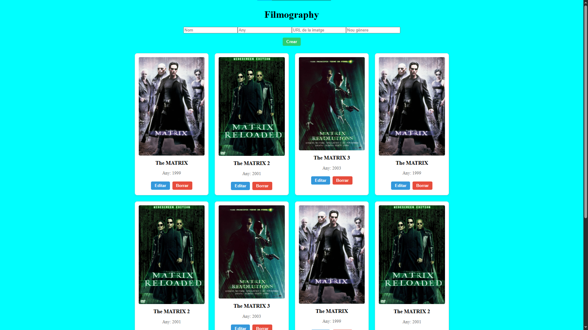
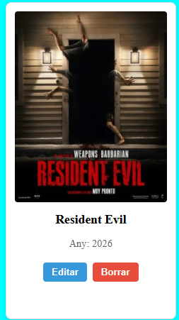
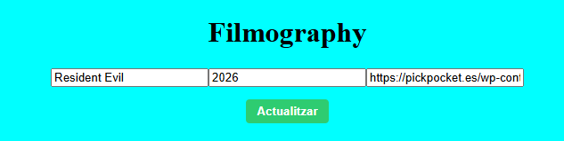

Objectiu
Presentar de manera visual el projecte original i documentar les decisions, les tecnologies i el procés de desplegament.
Aquest repositori és una base de pràctica per treballar amb GitHub Pages. Aquesta branca substitueix el codi de l'aplicació per una web estàtica de documentació.
Presentar de manera visual el projecte original i documentar les decisions, les tecnologies i el procés de desplegament.
La documentació està dividida en pàgines independents perquè la navegació siga clara i fàcil de consultar.
La branca gh-pages conté exclusivament els fitxers
necessaris per a la web estàtica.
Substitueix els següents marcadors per captures reals de l'aplicació.
Guarda-les dins de img/ amb els noms indicats.



Filmography
├── Aplicació original
│ ├── public/
│ ├── src/
│ └── package.json
└── gh-pages/
├── index.html
├── projecte.html
├── tecnologies.html
├── tutorial.html
├── css/style.css
└── img/